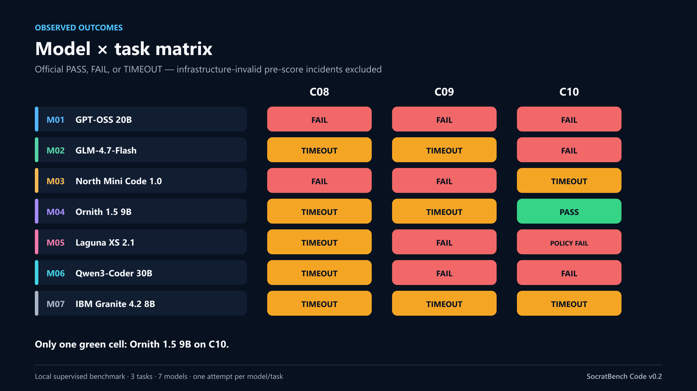
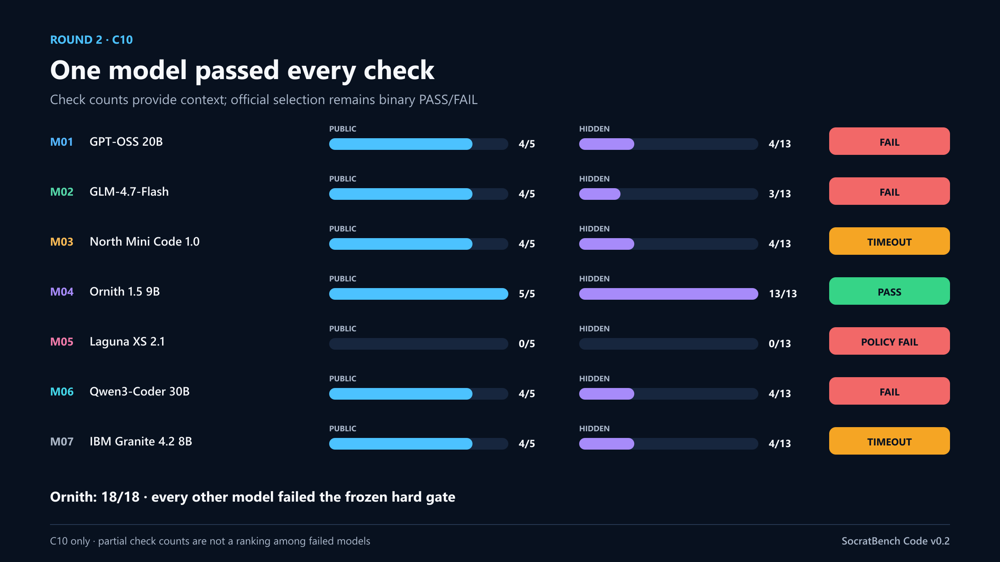
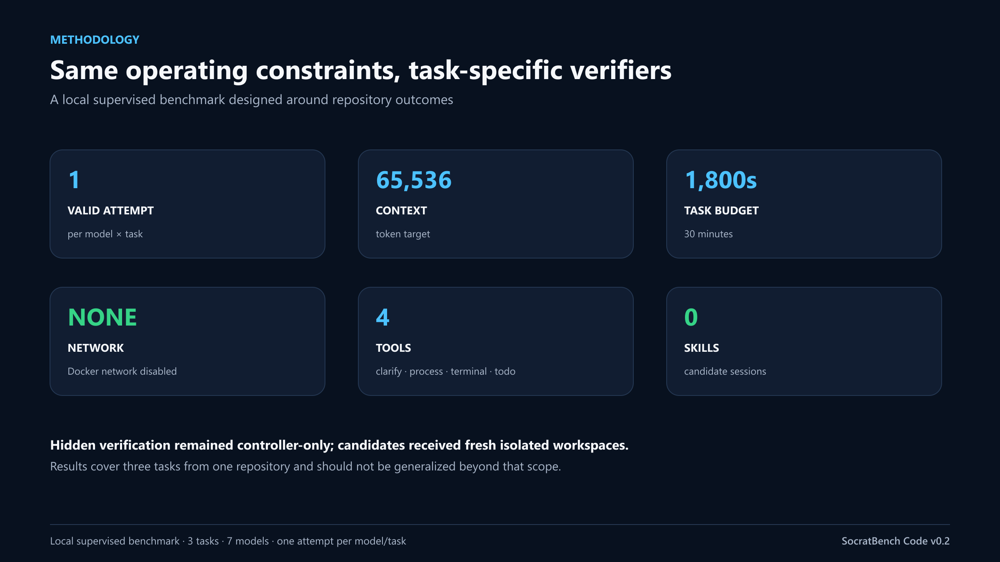

SOCRATBENCH CODE v0.2
Seven local models.
Three repository tasks.
One full solve.
A local, supervised, network-disabled benchmark on an RTX 3070 Ti.
7models
3tasks
21outcomes
1full PASS
Observed outcome matrix
| Model | C08 | C09 | C10 | Observed record | Timeouts |
|---|---|---|---|---|---|
| M01 — GPT-OSS 20B | FAIL | FAIL | FAIL | 0 PASS / 3 FAIL | 0 |
| M02 — GLM-4.7-Flash | FAIL | FAIL | FAIL | 0 PASS / 3 FAIL | 2 |
| M03 — North Mini Code 1.0 | FAIL | FAIL | FAIL | 0 PASS / 3 FAIL | 1 |
| M04 — Ornith 1.5 9B | FAIL | FAIL | PASS | 1 PASS / 2 FAIL | 2 |
| M05 — Laguna XS 2.1 | FAIL | FAIL | FAIL | 0 PASS / 3 FAIL | 1 |
| M06 — Qwen3-Coder 30B | FAIL | FAIL | FAIL | 0 PASS / 3 FAIL | 1 |
| M07 — IBM Granite 4.2 8B | FAIL | FAIL | FAIL | 0 PASS / 3 FAIL | 3 |

What happened
Ornith 1.5 9B earned the only complete PASS, on C10. No model passed C08 or C09. Ten outcomes changed the candidate snapshot, but only one passed every frozen gate. Ten normal completions still failed.

Methodology
Each candidate received one valid attempt, a 65,536-token context target, a 1,800-second task budget, a fresh Docker-isolated workspace, no network, four tools, and no skills. Hidden verification remained controller-only.

Limitations
These are 21 observed outcomes from three tasks in one repository on one local machine. They are not a population estimate or a general coding leaderboard. Quantization, local hardware, and one-attempt evaluation also limit transferability.
Bottom line
The defensible conclusion is not that one model is universally best. It is that repository-level verification sharply separates generating code from completing a correct fix.